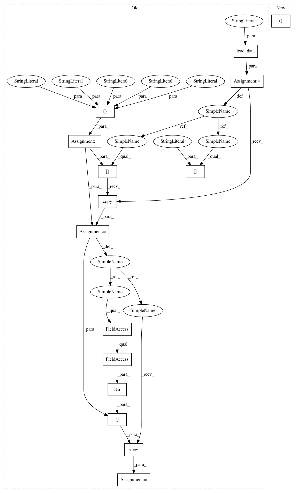

870022ab7abce46f9bff47c8a9c787808a630e59,tests/test_features/test_importances.py,TestFeatureImportancesVisualizer,test_integration_coef,#TestFeatureImportancesVisualizer#,91
Before Change
Integration test of visualizer with coef param
concrete = self.load_data("concrete")
feats = ["cement","slag","ash","water","splast","coarse","fine","age"]
// Create X and y datasets as numpy arrays
X = concrete[feats].copy()
X = X.view((float, len(X.dtype.names)))
y = concrete["strength"]
fig = plt.figure()
ax = fig.add_subplot()
After Change
// Load the test dataset
dataset = load_concrete(return_dataset=True)
X, y = dataset.to_numpy()
features = dataset.meta["features"]
fig = plt.figure()
In pattern: SUPERPATTERN
Frequency: 3
Non-data size: 15
Instances
Project Name: DistrictDataLabs/yellowbrick
Commit Name: 870022ab7abce46f9bff47c8a9c787808a630e59
Time: 2019-01-30
Author: benjamin@bengfort.com
File Name: tests/test_features/test_importances.py
Class Name: TestFeatureImportancesVisualizer
Method Name: test_integration_coef
Project Name: DistrictDataLabs/yellowbrick
Commit Name: 870022ab7abce46f9bff47c8a9c787808a630e59
Time: 2019-01-30
Author: benjamin@bengfort.com
File Name: tests/test_features/test_importances.py
Class Name: TestFeatureImportancesVisualizer
Method Name: test_integration_feature_importances
Project Name: DistrictDataLabs/yellowbrick
Commit Name: 870022ab7abce46f9bff47c8a9c787808a630e59
Time: 2019-01-30
Author: benjamin@bengfort.com
File Name: tests/test_features/test_importances.py
Class Name: TestFeatureImportancesVisualizer
Method Name: test_integration_coef
Project Name: DistrictDataLabs/yellowbrick
Commit Name: 870022ab7abce46f9bff47c8a9c787808a630e59
Time: 2019-01-30
Author: benjamin@bengfort.com
File Name: tests/test_features/test_importances.py
Class Name: TestFeatureImportancesVisualizer
Method Name: test_integration_quick_method